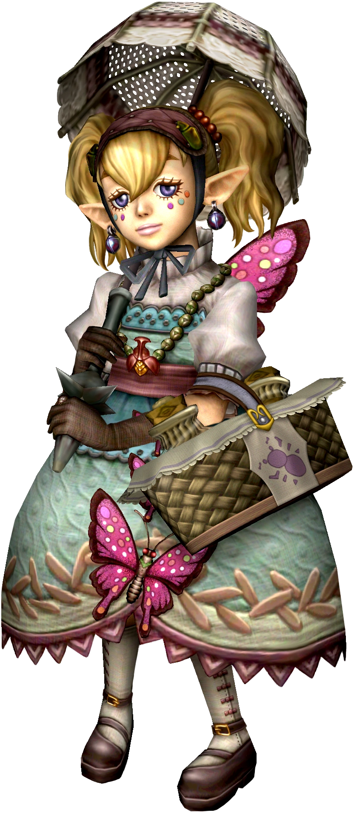
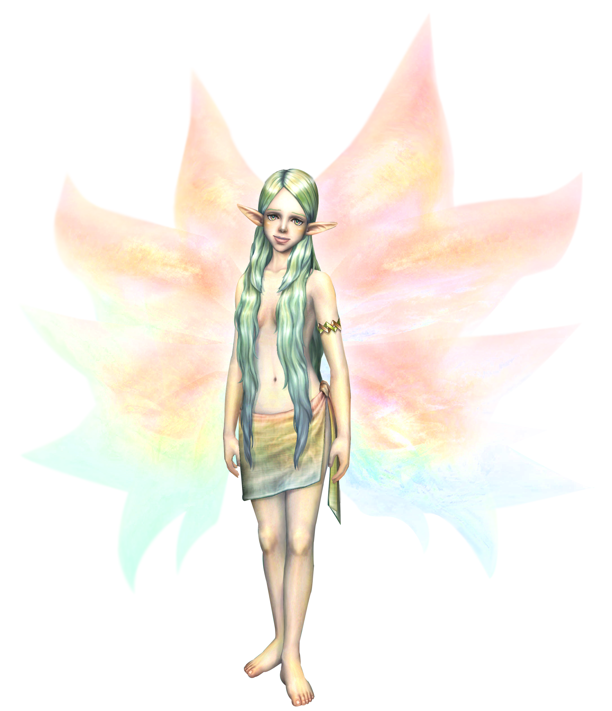
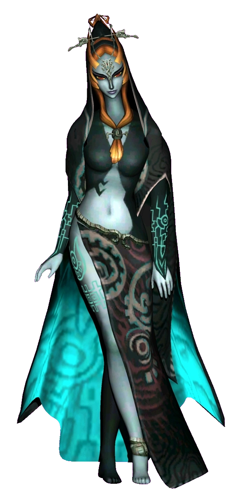
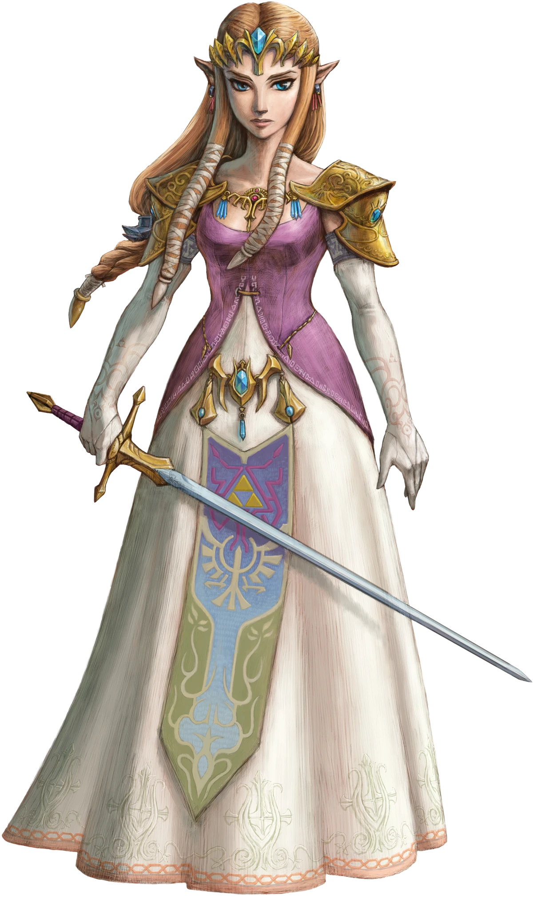

Princesa Agitha
Agitha es una princesa joven y autoproclamada alrededor de la edad de 10 años. Vive en su castillo en Castle Town. Le encanta vestirse con ropa de estilo gótico y finge ser una princesa del reino de insectos en su propio castillo. Había enviado invitaciones a los Bugs de Oro para que vinieran a su bola.
Gran Hada
Las grandes hadas son personajes recurrentes en la serie Leyenda de Zelda. Las grandes hadas son hadas muy poderosas comúnmente encontradas que residen dentro de fuentes bien escondidas. Pueden proporcionar a Link artículos potentes, así como mejor salud y magia. Son lo más parecido a los líderes de la raza de las Hadas, y comúnmente se representan como claramente humanoides en apariencia.
Midna princesa del ocaso
Midna es una descendiente de la raza Twili. Ella conoce al protagonista, Link, para trabajar juntos en busca de las partes de la Sombra Fundida, para así derrotar a Zant. Midna, como todas las criaturas del Reino Crepuscular, no puede tolerar la luz. Se esconde en la sombra de Link cuando se encuentra en el Mundo de la Luz. Ella toma su forma física cuando Link se encuentra en el Crepúsculo.